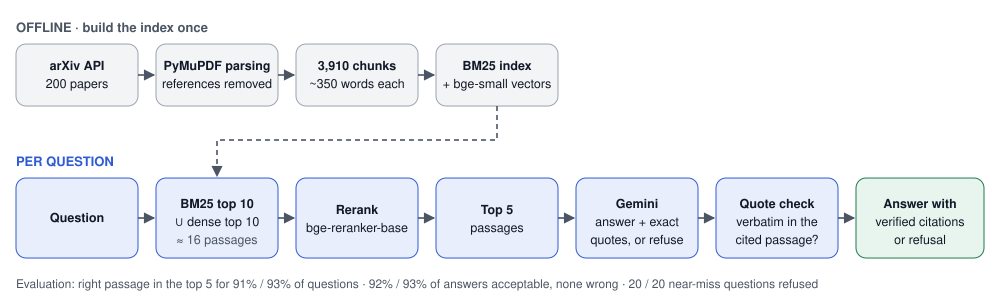
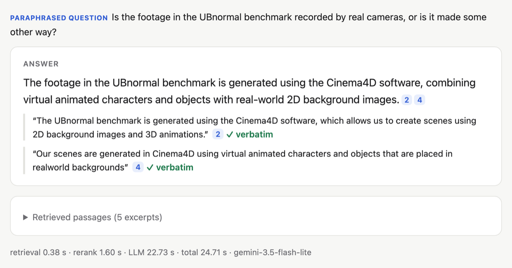
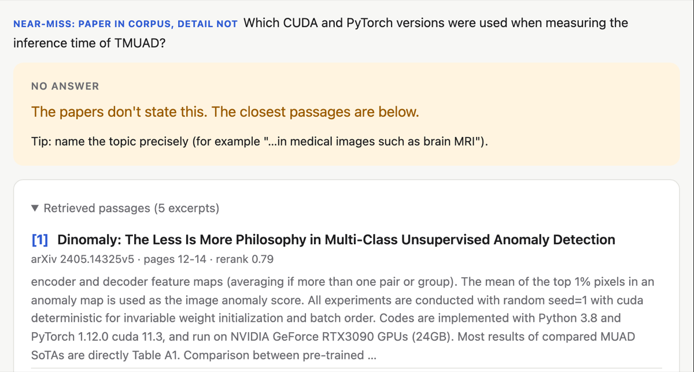

ScholarRAG answers questions about 200 arXiv papers on visual anomaly detection, where every answer has to quote the passage it comes from, the quote is checked against the paper, and when the papers don't contain the answer, it says so instead of making something up.

It mixes keyword search (BM25) with dense search, reranks the candidates with a cross-encoder, and gives the best 5 passages to Gemini. Gemini answers with an exact quote for every citation, and the code checks each quote word by word.

Before tuning anything, I froze two question sets (64 written by an LLM, 15 written by hand) and 20 near-miss questions, where the paper is in the corpus but the detail is not. Some results:
- the right passage is among the 5 retrieved for 91% (LLM-written) and 93% (handwritten) of the questions;
- on paraphrased questions, the right passage comes first 73% of the time, against 20% for BM25 alone;
- an LLM judge, checked by hand on a sample, rates 92–93% of the answers acceptable and none wrong;
- all 20 near-miss questions were refused.

However not everything worked: smaller chunks, RRF alone, a smaller reranker and rewriting every question were all tested and dropped the numbers are in the notebooks. The online demo juts replays recorded answers, because hosting the live version on Hugging Face needs a paid plan (I don't pay anything right now), but the full app runs on my computer (the steps are in the README). This project built with the help of Claude Code (Opus 5.5 Ultracode).
If you find a bug or have a suggestion, feel free to reach out to me on GitHub.